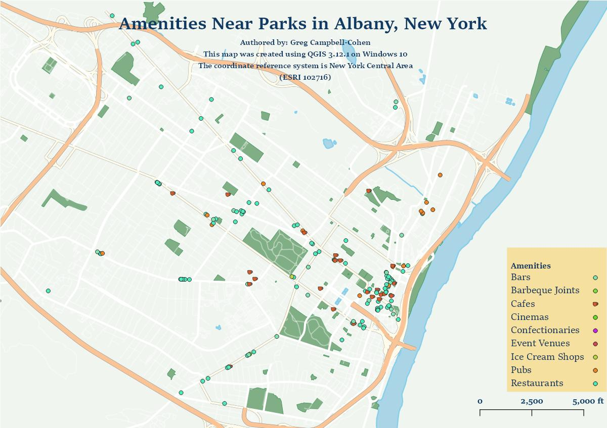

Amenities Within 1 Mile of Parks in Albany, New York
Link to high resolution map
Authored by: Greg Campbell-Cohen
This map was created using QGIS 3.12.1 on Windows 10.
The coordinate reference system is New York Central Area (ESRI: 102716).
This map was created for the Institute of Environmental Recreation. Included are bars, barbeque joints, cafes, cinemas, confectionaries, event venues, ice cream shops, pubs, and restaurants. Trails are not meaningfully present within the Albany city limits.
- See my projects on GitHub: Greg Campbell-Cohen
- Follow me on Twitter: @gpeasant_mindset
- Find me on LinkedIn: LinkedIn